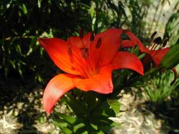
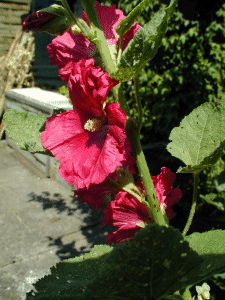
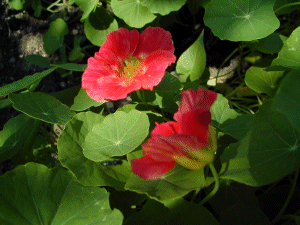

L'été flamboie dans notre jardin ! Des liliums d'une couleur surprenante, des capucines sélectionnées, des roses trémières et des hémérocalles ... une symphonie rouge orangé qui met de bonne humeur même si le ciel est gris !


Si vous entrez directement :
Vers l'entrée du site, cliquez ici